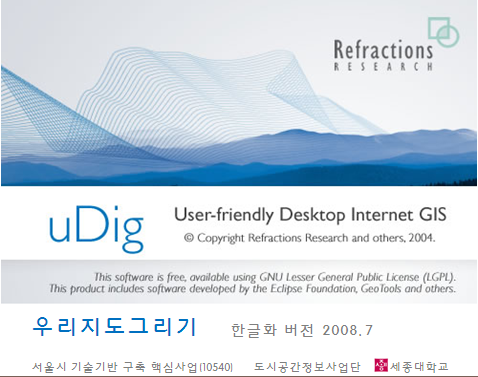
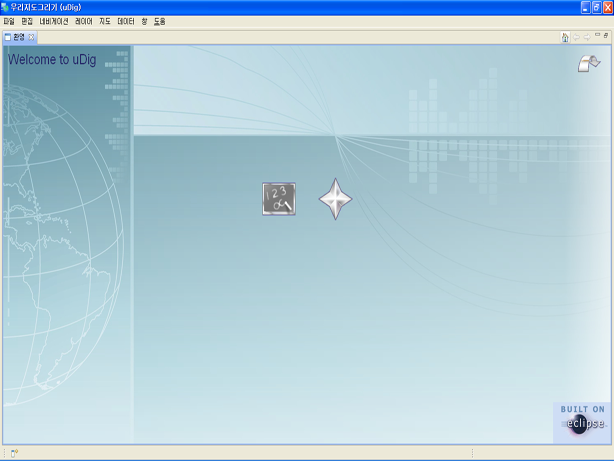
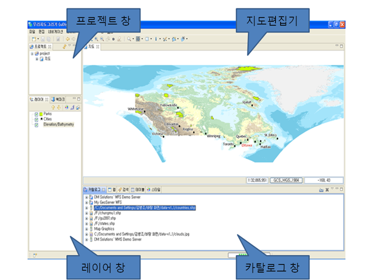
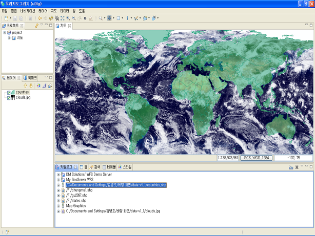
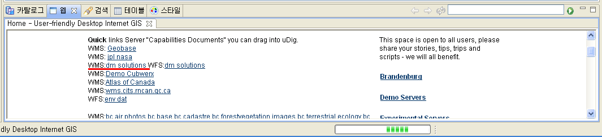
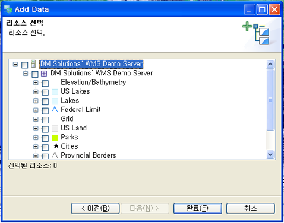
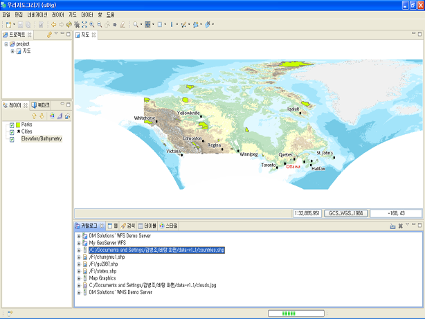

빠른 시작
온라인 도움말에 포함된 uDig 애플리케이션의 빠른 소개입니다.
샘플 데이터
시작하기에 앞서 웹에서 사용할수 있게 만든 샘플데이터를 다운로드 하세요.
- 링크를 오른쪽 클릭하고 "다른이름으로 링크저장" 을 선택하세요. data-v1_1.zip
- 저장할 파일의 위치를 선택하세요.
- 다운로드된 압축파일을 적절한 디렉토리에 풀어놓으세요.
본인소유의 GIS 데이터로도 따라하기 가능하며, 샘플테이터를 사용하면 이 튜토리얼의 단계를 더욱 쉽게 진행할 수 있습니다.
uDig 애플리케이션
- 시작메뉴의 "uDig 1.1 > uDig" 을 선택하세요.
- 애플리케이션이 실행되는데 어느 정도의 시간이 소요됩니다.

uDig 애플리케이션은 당신의 홈 디텍토리에 환경설정폴더를 보관하며, 해당 폴더는 애플리케이션이 처음 실행 되었을 때 생성됩니다. 만약 어떤 문제가 발생하거나, Linux 또는 Mac 에서 uDig를 실행한다면 Running uDig 링크를 참조하세요.
환영 뷰
- uDig가 처음 실행될 때 환영 뷰가 전면에 전시됩니다. 이 화면은 튜토리얼, 문서, 프로젝트 웹사이트와 링크 되어 있습니다.
- uDig 워크벤치의 컨텐츠를 보기위해, 오른쪽 모서리 상단의 화살표 모양의 "workbench" 를 클릭하세요.

언제든지 메뉴 바의 "도움말 > 환영" 을 선택하여 환영 뷰로 돌아갈수 있습니다.
워크벤치
워크벤치는 다중 편집기(지도 디스플레이)와 뷰(지도에 대한 정보)을 제공합니다.

위 그림은 전형적인 uDig 세션으로 지도 편집기, 프로젝트 뷰, 레이어 뷰, 카탈로그 뷰를 나타냅니다. 이러한 뷰들은 후에 자세히 기술될 것 입니다.
파일
시작하기 위해서 우리가 처음에 다운로드한 샘플 데이터를 로드하려고 합니다.
- 자료 추가 마법사를 열기 위하여 메뉴바에서 "레이어 > 추가" 를 선택하세요.
- 자료 소스 목록으로 부터 파일을 선택하세요.
- 파일 다이얼로그를 열기위해 "다음" 을 누르세요.
- 데이터 폴더에서 "countries.shp" 파일을 선택하세요.
- "열기" 를 누르세요.
- shapfile의 콘텐츠에 맞는 지도 편집기가 열립니다. 지도에서 디폴트 이름과 투영방식은 shpfile의 정의에 따릅니다.
- "countries.shp" 와 "clouds.jpg" 가 카탈로그 뷰에 추가됩니다. 이 뷰는 uDig 애플리케이션의 자원 사용현황을 추적합니다.
- 레이어 뷰에는 하나의 레이어만 디스플레이 됩니다. 이 뷰를 이용해서 지도의 디스플레이 순서나 모양을 바꿀 수 있습니다.
- "프로젝트 뷰" 가 업데이트 되어 지도가 "projects > countries" 에 저장되어있는 것을 보여줍니다. 여러 개의 프로젝트를 동시에 열수 있으며 각 프로젝트는 여러 개의 지도를 가질 수 있습니다.
- 윈도우즈 탐색기를 이용하여 데이터 폴더로 이동하세요.
- 탐색기로 부터 "clouds.jpg" 파일을 지도 편집기로 드래그하면 지도에 새로운 레이어가 추가됩니다.
- 레이어 뷰로부터 레이어가 그려지는 순서를 확인할 수 있습니다. 현재 "clouds.jpg" 레이어는 countries 레이어 위에 그려져 있습니다.
- 카탈로그 뷰에서 "clouds.jpg" 레이어를 선택하고 목록의 아래로 드래그 하세요.

정보: 가장 일반적인 질문 중 하나는 uDig가 얼마나 많은 메모리를 사용하는가 입니다. 다른 GIS 애플리캐이션과 달리 uDig는 고정된 양의 메모리로도 실행 가능 합니다. 위의 shapfile은 메모리에 로드되지 않으며, 디스크로 부터 필요에 따라 shapfile과 같은 데이터를 스크린에 디스플레이 합니다.
팁: uDig 애플리캐이션에 shapfile을 직접 드래그할 수 있습니다.
지도
화면 상단의 도구 바에 네비게이션 툴을 사용해서 지도 편집기를 조정할 수 있습니다.
 줌 툴은 디폴트로 제공됩니다.
줌 툴은 디폴트로 제공됩니다.
- 줌 툴을 사용하여 마우스 왼쪽 버튼으로 당신이 보기 원하는 주변 지역에 박스를 그리세요.
- 줌 아웃 하기위해 마우스 오른쪽 버튼으로 박스을 그리세요. 현재 지도의 범위는 그려진 박스로 정의됩니다.
 팬 툴은 축적의 변화 없이 지도를 스크롤할 수 있습니다.
팬 툴은 축적의 변화 없이 지도를 스크롤할 수 있습니다.- 언제든지 사용할 수 있는 네비게이션 버튼이 몇개 더 있습니다.
 모두 보기, 언제든지 전체 화면으로 돌아가기 위해 사용됩니다.
모두 보기, 언제든지 전체 화면으로 돌아가기 위해 사용됩니다. 줌 인 과
줌 인 과  줌 아웃은 정해진 크기로 축적을 변화시키기 위해 사용할수 있습니다.
줌 아웃은 정해진 크기로 축적을 변화시키기 위해 사용할수 있습니다.- 메뉴 바의 "네비게이션 > 돌아가기" 와 "네비게이션 > 앞으로" 를 사용하여 이전 위치로 갈 수 있습니다.
팁: 모든 툴은 중앙 버튼을 누르면 팬이 가능하고 스크롤 휠을 이용해서 축적을 변화시킬수 있습니다.
WMS 웹 맵 서비스
uDig와 같은 애플리케이션을 사용하는 이유중 하나는 웹에서 무료로 제공하는 공간정보를 활용하기 위해서입니다. 이 섹션에서는 Web Map Servers로 여러 레이어를 작성하여 지도를 만드는 방법에 대해서 설명하고 있습니다.
- 메뉴 바에서 "파일 > 새로운 작업 > 새로운 지도" 를 선택하세요.
- 카탈로그 뷰 옆의 탭을 누르면 웹 뷰로 변환됩니다.
- WMS:dm solutions 링크를 클릭하세요.

- Resource Selection page 로 부터 다음의 레이어를 선택하세요.
- Elevation/Bathymetry
- Parks
- Cities

- 지도에 해당 레이어들을 추가하기 위해 "완료" 를 누르세요.

- 공원들 중 한 곳을 확대하기 위해 줌 툴을 사용하세요.
 정보 툴을 누른 후 공원을 선택하면 자세한 정보를 볼 수 있습니다.
정보 툴을 누른 후 공원을 선택하면 자세한 정보를 볼 수 있습니다.
팁: 키보드의 Z 나 I 를 눌러 줌 툴과 정보 툴 로 변환할 수 있습니다.
스타일
- "프로젝트 > countries" 를 선택합니다, 이 지도를 열기 위해 더블 클릭 할 수도 있고 마우스 오른쪽을 클릭하고 "지도 열기" 를 선택할 수 있습니다.
- 레이어 창에서 countries 레이어를 선택하세요.
- countries 레이어에 오른쪽 클릭 후 "스타일 변환" 을 선택하여 스타일 편집기를 열 수 있습니다.
- countries에 대한 디스플레이 방식을 아래의 방법으로 변환합니다.
- 선: "색" 을 클릭하고 검정색으로 변경하세요.
- 채우기: 박스 안의 체크를 해제하면 채우기색이 불투명 해집니다.
- 레이블: 박스 안을 체크하고 속성목록에서 CNTRY_NAME 을 선택하세요.
- 지도에서 볼 수 있도록 "적용" 을 누릅니다, 레이어 뷰에 현재의 스타일이 반영되어 업데이트 되어집니다.
- 작업 완료 후 "닫기" 를 눌러 다이얼로그를 종료합니다.
- 일부 파일은 스타일 설정을 포함하고 있습니다, 메뉴바의 "레이어 > 추가" 를 선택하세요.
- 데이터 소스의 목록에서 "파일" 을 선택하고 "다음" 을 누르세요.
- 파일 다이얼로그에서 "timezone.shap" 를 선택하고 열기를 누르세요.
- 선택된 레이어에 강조하기 위하여 메뉴 바로 부터 "*지도 > 마일라"*를 선택하세요.
- 레이어 뷰에서 timezone, countries, cloud.jpg를 순서대로 선택하여 효과를 확인하세요
- 메뉴 바의 "지도 > 마일라" 선택하여 이 기능을 중단할수 있습니다.
다음 단계
빠른시작 다음단계로 다음 실습과정을 추천합니다.
연습하기1
연습하기2
(c) Copyright (c) 2004-2008 Refractions Research Inc. and others.